Apertium's Web Toolchain
for Low-Resource Language Technology
for Low-Resource Language Technology

Overview
- Components:
- Provides online access to Apertium language technology (MT, etc.)
- Roadmap of talk:
- How HTML-Tools, APy, and Apertium fit together
- Key features and technology
- Advanced features and ongoing work
- Usage statistics
- Relevance to low-resource languages
| HTML-Tools (web front end) | |
| + | APy (API in Python) |
| = | Apertium's web toolchain |
Overview
HTML-Tools

Full Internationalisation
- Default to browser locale
- RTL text and layout
- Autoglossonyms from APy: SIL, Unicode CLDR, manual curation
- Easy to contribute/extend localisations
Other Features
- Instant translation
- Remembers text and selections, updated in URL
- Simple build, can be built and used offline
- Matomo for analytics
APy
- Example of use
- query (URL):
/translate?langpair=kaz|tat&q=Қанша мәтін? - response (JSON):
{… "translatedText": "Ничә текст?"} - Written entirely in python3 (
tornado) - Query endpoints modelled after ScaleMT
- In turn modelled after Google Translate's API
- Drop-in replacement for major APIs
- Pipelines for each pair and morphological analysis/generation
- Leverages existing Apertium mode files
- Pipeline kept open and flushed between requests
- Multiple pipelines on-demand, split large requests
- APy can make a web service from any Unix pipeline: e.g. Ávvir
Advanced Features
Language Variants

Webpage and Document Translation
- Webpage translation: output displayed in iframe
- Links within webpages trigger translation too
- Document translation: RTF, LibreOffice/OpenOffice, MS Office 2003+
Modes
- Tabs in HTML-Tools interface
- Currently deployed: morphological analysis and generation
- Other developed modes: APy sandbox, spell-checker
- Customizable and extendable
Ongoing Work
Multi-step Translation
- Translation through intermediate (pivot) languages
- Defaults to shortest path—future work may incorporate pair quality
- User can choose a path by selecting languages and viewing valid paths
Dictionary lookup
- All possible translations with part of speech
- Future work:
- Reverse translations for context
- Morphological subcategory information (Gender, number, conjugation, etc.)
- Multi-word units
Spell-checking
libvoikkoorhfst-ospellcreate spellers from language modules- Separate tab in HTML-Tools
Suggestions
- User can suggest translations for unknown words in context
- Logged by APy, can seed quality improvements
- Rating translations?
Usage
- From
apertium.orgsince April 2014:- 2.1M visits
- 183 countries
- 19.8M translation requests
- 11 pairs with over 100k requests each
- most popular translation directions:
nob ↔ nno(Norwegian Bokmål ↔ Nynorsk)
spa → cat(Spanish → Catalan)
por → spa(Portuguese → Spanish)
- HTML-Tools and APy analytics tools
Relevance
- Provides quick and easy access to Apertium language technology
(able to be used by anyone, regardless of ability to use command line) - Public access, low cost, low maintenance
- Low disk, memory, processing requirements, and offline usage
⇒ low infrastructure costs - Free and open source (GPLv3)
- Focus funding and time on the specific language technology
- Low disk, memory, processing requirements, and offline usage
- Customizability and sub-sites (e.g.
turkic.apertium.org) - Modularity: APy as a general service
- Multi-step translation: new moderate-quality pairs with little effort, extending range as a temporary solution
- Suggestions: an additional path for low-resource language users to directly help in development
Community
- Code: bugs, suggestions, pull requests welcome!
- Non-technical contributions: localizations, translation improvements
- Mailing list:
apertium-stuffon SourceForge - IRC:
#apertiumon Freenode - Give it a try!
apertium.org,turkic.apertium.org,beta.apertium.org